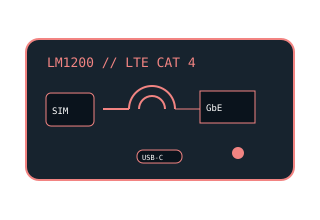

[ MODEL-SPECIFIC NETWORK HARDWARE ]
NETGEAR LM1200 LTE Cat 4 Modem
North American LTE modem for a nano-SIM mobile-data subscription, wired Ethernet handoff, USB-C power and optional external antennas.

EXACT MODEL / SKU: NETGEAR LM1200-100NAS (North America). European, Australian and other regional suffixes use different bands or certifications.
Exact specifications and compatibility
| Modem standard | 4G LTE Category 4 data modem; supported band set is regional, not a universal multicarrier guarantee. |
|---|---|
| Interfaces | Nano-SIM slot; 1 × Gigabit Ethernet RJ-45 for host/router; USB-C 5V power input; two TS-9 external antenna connectors. |
| Downstream / upstream | LTE Cat 4 peak rates up to 150Mb/s down and 50Mb/s up, subject to band, radio conditions, network load and the carrier's assigned data plan. |
| Telephone service | Data-only mobile broadband modem; no telephone jack or supported cellular voice/VoLTE handset feature. |
| Provider compatibility | For LM1200-100NAS, confirm carrier acceptance/IMEI, approved LTE bands and an activated nano-SIM data plan; the published North American band profile includes LTE B2/B4/B5/B12/B13/B14/B17/B25/B26/B41/B66/B71. Carrier offerings and certification can change. |
| Firmware / host compatibility | Use NETGEAR's support/download page for the exact LM1200 region and revision. Carrier/SIM/APN configuration is service-dependent; Ethernet clients need standard TCP/IP, not a model-specific cellular driver. |
| Power and safety | 5V DC, 2A through USB-C as specified for the LM1200. Use the supplied/approved 5V supply only—never connect 12V—and keep the modem/antenna cables ventilated, dry and undamaged. |
Model-specific notes
The Ethernet port is a wired handoff, not a Wi-Fi radio. The radio's 150/50Mb/s Cat 4 figures are theoretical maxima and voice service is not provided.
Manufacturer specifications and manual
- NETGEAR LM1200 official data sheetManufacturer technical source for LTE categories, bands, interfaces and power.
- NETGEAR LM1200 official support and downloadsManufacturer manual, software, firmware and revision-specific support portal.
- NETGEAR LM1200 product pageOfficial manufacturer product information; compare regional model suffixes.